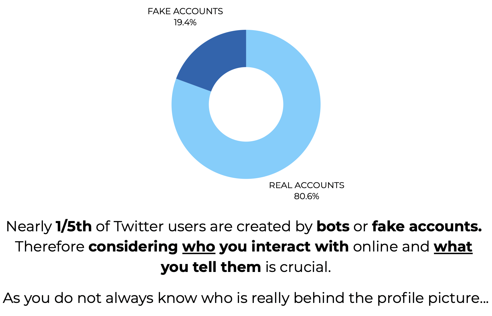
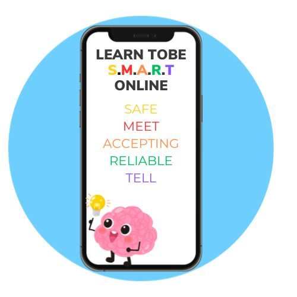
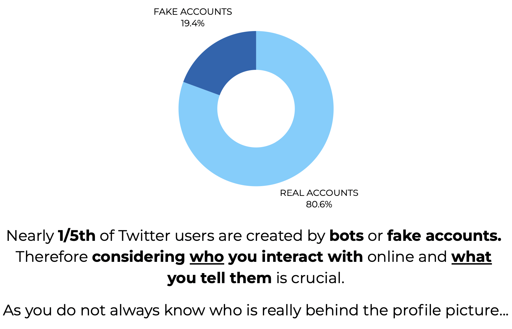
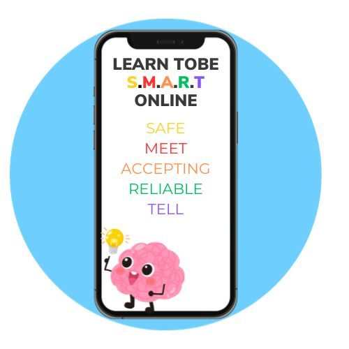
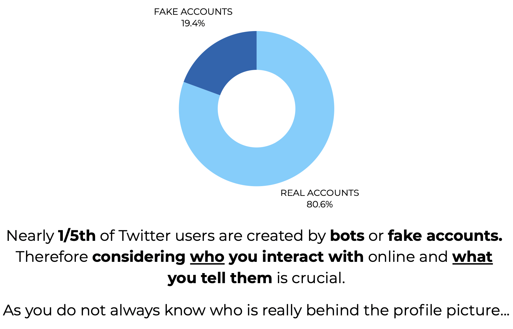
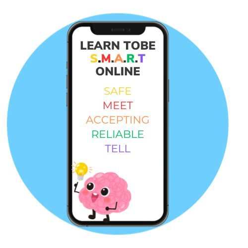

Task 3: Generate a Portfolio of Images

  
 
These images are a collection of copyright free images acquired from the web, along with images created by myself.
The application and reflection of the 5 stages of creativity is a reoccurring process that, in reading this creative process, I have and will continue to revisit. Each week I might approach or question a different step of the process as a stage of reflection but below is my ideology thus far.
I think the first three steps of the process (preparation, incubation, and ideation) have been mostly covered and developed in the first few weeks of the initial planning of the decision for my website. I think preparation in the form of consumption is a key factor I have used to inspire my website. If ever lacking creativity or ideas, reading and researching evoked different inspiration for angle to approach my topic. So too, the research activity in the week one lab was a good starting point to discovering how to narrow down my choice. In thorough research and interchanging research techniques, I discovered not only different topic ideas, but also what topic ideas would be more relevant to my audience. For example, with the initial idea of online community being a starting point, in reading about cases of misinformation and threats of online presence, I wanted to focus on safety online. Furthermore, relating it to high school audiences came the idea to integrate social media through reading about its influence on younger generations.
Incubation works hand in hand with this first step in a sort of trial and error approach. I began doubting my ideas of focussing on community and lost track of what its intentions were. However, by doing further reading (preparation, step one), not always specifically related to my initial studies, I began to understand why I wanted to approach this topic initially; because it interested me and is relevant to an online-driven society. In regaining this interest, I used a user solution focused strategy, further developed in the week 2 labs. By imagining the potential users of my web site I gained an understanding of what questions to address and how to address them.
Ideation was the toughest step of the process. I found ideation for concept design easier than the actual focus area of my topic. In appealing to younger audiences, understanding and framing the visual design of the website came more easily. As for a narrowed down topic of focus, that came with much hypothetical interpretation of audience, as well as conversations with peers and lecturers.
My main evaluation so far came post receiving feedback on my initial project proposal. I was daunted with the realisation that my project idea was perhaps not necessarily novel enough. The broad topic I proposed of "how does your online community effect you?" is broad and unspecific. So too, my next steps go back to stage one of the process, preparation. Finding different approaches to the topic and how I can develop and expand upon this broad concept. I think my topic contains relevance and importance, though it may be basic knowledge. Thus, I had to find a more niche approach. In acknowledging this, and through advice from markers, I found more specific examples which relate to X (formally Twitter's) historic impact on community and identity online. I also acknowledged the need to reiterate relevance to my sources to the topic of my website. Informing and sustaining attention must remain my most important factors in choosing the content to display.
Thus arrives implementation. For this, I think this stage is just newly beginning, since roughly week 5. This has been done in combining early considerations of audience and content, as well as approaches to design. In weeks 4 onwards we have used more practical, creative skills to present the information we have gathered. In researching the importance of multimedia in design and actually implementing and creating texts (and this week images) comes a more physically creative, interactive approach to multimedia development.
Overall, as previously mentioned, through my experience, the process of creativity is a multifaceted and not necessarily systemically ordered process. It involves development and evaluation on all stages, and constant questioning and solution-finding. It related to the "5 whys" of principle design. The constant critical thinking, optimizing outcomes for problems that may arise, and constantly considering your aims and audience at the forefront of your mind.
The websites I used are as follows:
Red:Blog Hub Spot Blue:CEOP Orange:Childnet Yellow:SWGfL
 
These images are a collection of copyright free images acquired from the web, along with images created by myself.